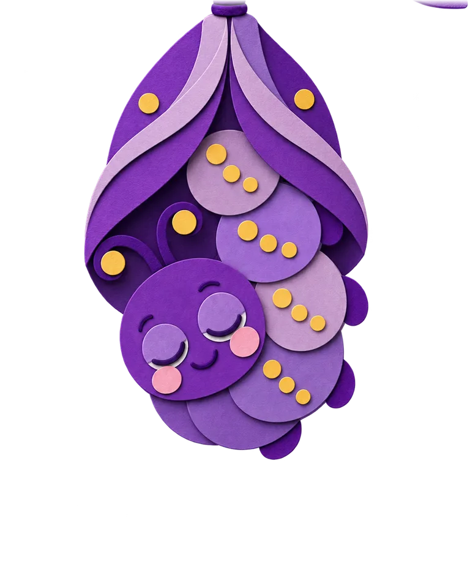
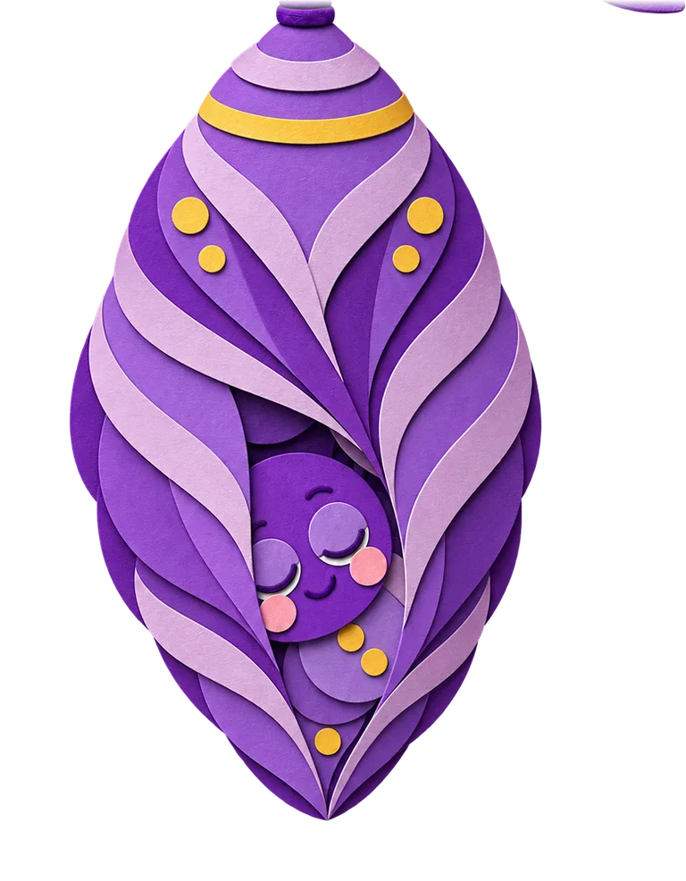
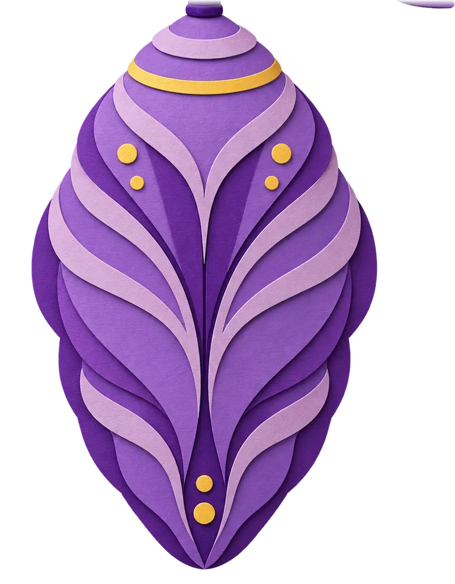
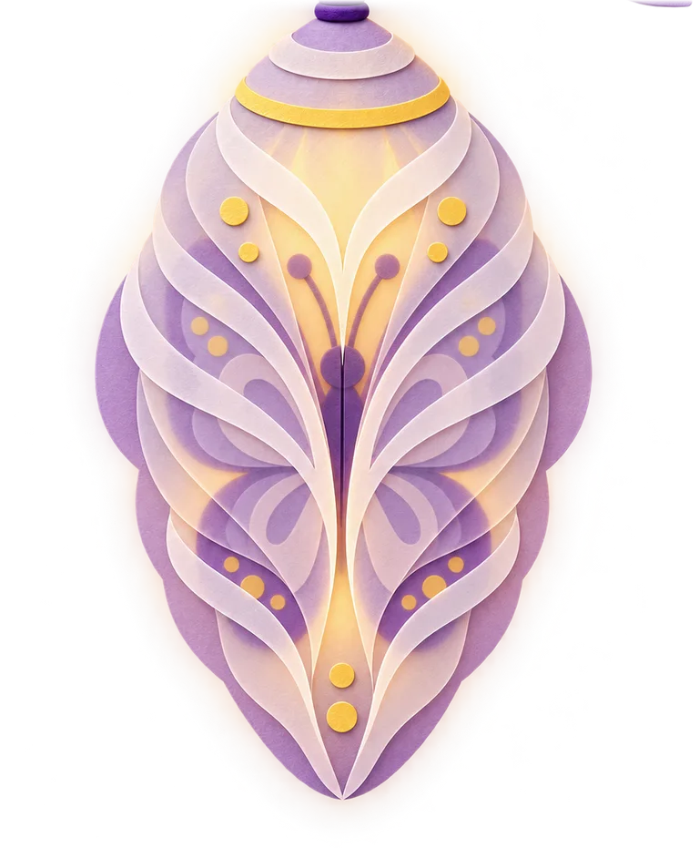
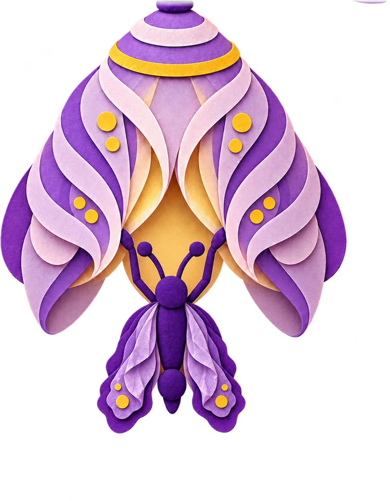
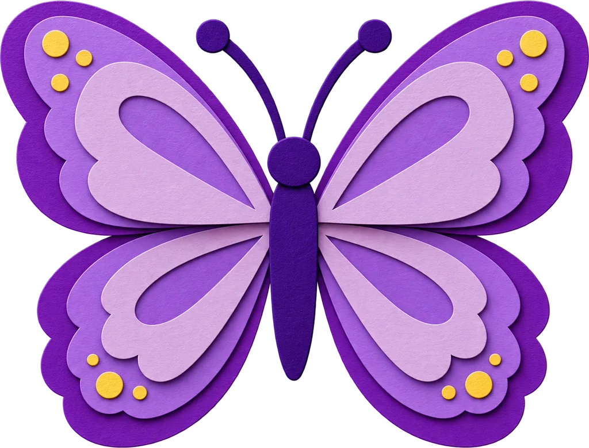
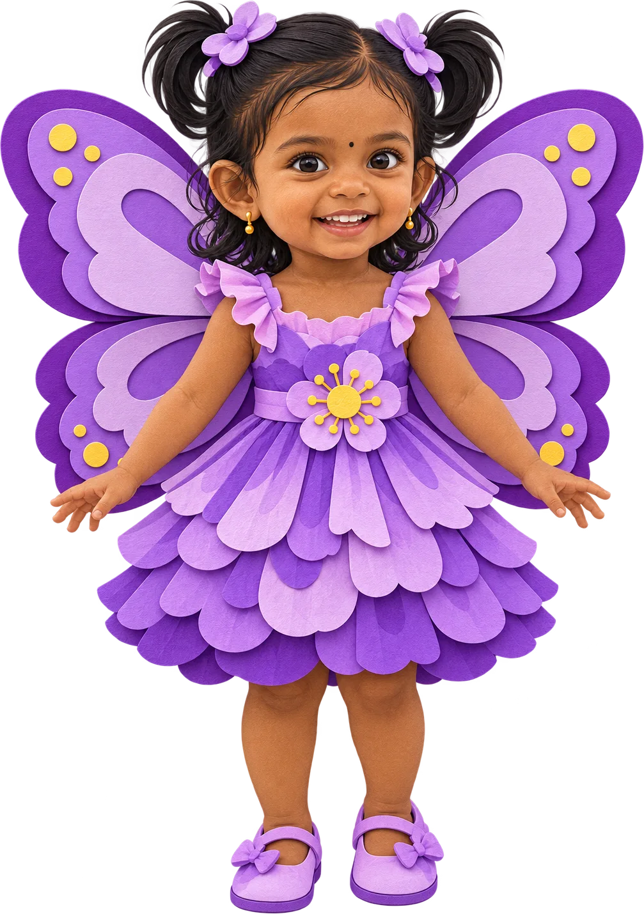

Dear ,
Taneira is turning two
A year ago, she was our little caterpillar.






Lately, something has been changing…

She’s got her wings!
Come celebrate with us
- When
- Saturday, 28 November
6 – 8 PM - Where
- Party Hall, Ramaniyam Magnum
Perungudi, Chennai - Wear
- Any shade of purple
Made with love by Taneira’s family